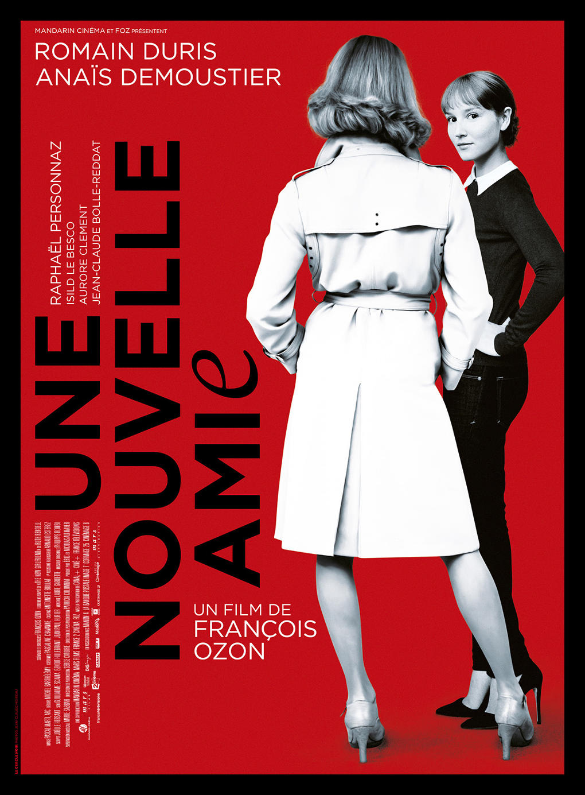
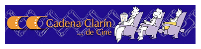

Los Cines Centro (Plaza Romualdo Alvargonzález, Gijón) mantivieron en su cartelera, durante la primera quincena de junio, la película «Una nueva amiga» (Une nouvelle amie, Francia, 2014) en versión original en francés, subtitulada en español.
- Lunes uno de junio, sala 5, 17:00 y 19:45
- Martes dos de junio, sala 5, 19:45
- Miércoles tres de junio, sala 5, 17:00 y 19:45
- Jueves cuatro de junio, sala 5, 19:45
- Viernes cinco de junio, sala 5, 19:45 y 22:30
- Sábado seis de junio, sala 5, 17:00, 19:45 y 22:30
- Domingo siete de junio, sala 5, 17:00 y 19:45
- Lunes ocho de junio, sala 5, 17:00 y 19:45
- Martes nueve de junio, sala 5, 19:45
- Miércoles 10 de junio, sala 5, 17:00 y 19:45
- Jueves 11 de junio, sala 5, 19:45
- Viernes 12 de junio, sala 5, 19:45 y 22:30
- Sábado 13 de junio, sala 5, 17:00, 19:45 y 22:30
- Domingo 14 de junio, sala 5, 17:00 y 19:45
- Lunes 15 de junio, sala 5, 17:00 y 19:45
- Martes 16 de junio, sala 5, 19:45
- Miércoles 17 de junio, sala 5, 17:00 y 19:45
- Jueves 18 de junio, sala 5, 19:45
«Una nueva amiga»
«Una nueva amiga» es una película dirigida por François Ozon.
Al fallecer su mejor amiga, Claire cae en una profunda depresión, pero un sorprendente descubrimiento en torno al marido de la amiga le devolverá las ganas de vivir.
Cines Centro
Plaza Romualdo Alvargonzález, Gijón
Ésta es una actividad organizada por Cadena Clarín.
